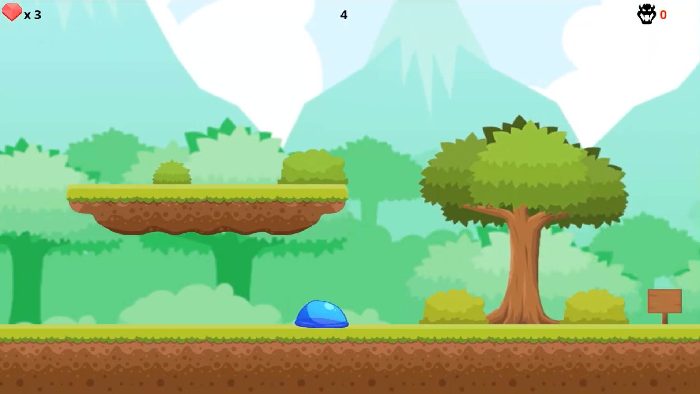
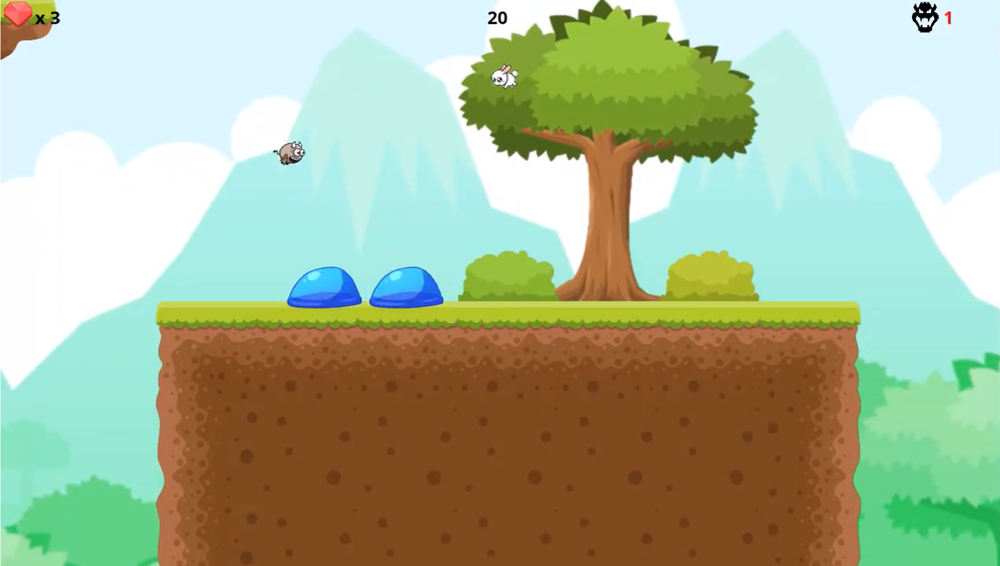
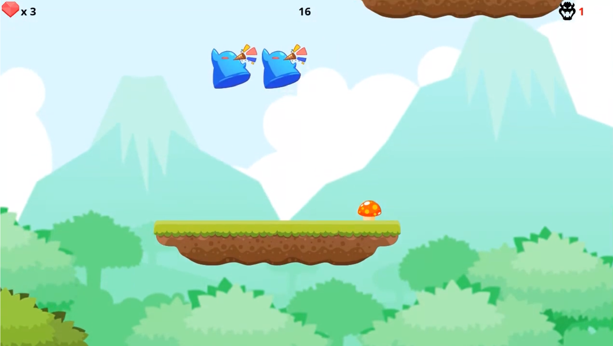
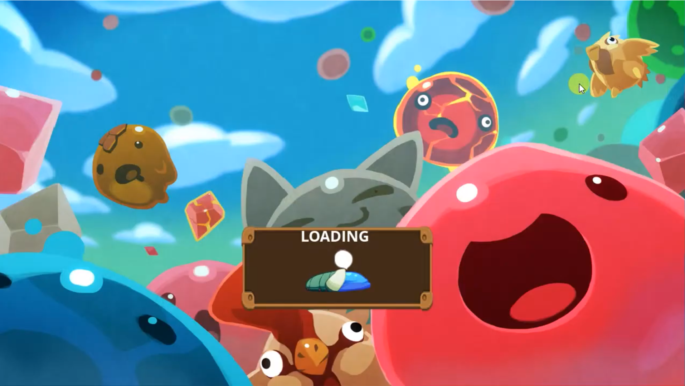

Salty the Slime is a 2D platformer game, where the player takes control of a jumpy slime. The objective is to reach the end of the level without dying.
The slime can eat enemies that are smaller than him, but he will grow in size, making him slower and jump less. When the slime is large enough, he can split into multiple slimes, recovering his speed.
This game was made in class for the subject "Game Development" of the Bachelor's Degree in Video Game Design and Development at the UPC with a colleague.
Implemented the movement of the slime and the jump which can be charged for an increase in force. Also made the avoidance of platform collision when jumping from below.

Implemented the module that calculates the differents paths through A* that enemies use for their movement. It supports jumps, ground based and air movements.
Implemented each enemy we have in the game, animations, his movement (flying or grounded) and jump.

Implemented entity module, which manages all the entities of the game such as player, copies, enemies, etc. It is responsible of creating, deleting and updating them.

Worked on the GUI of the game, creating the different panels and buttons it had.

Implemented map module which receives a tmx file created with Tiled and is able to create a tile based map in game, it also creates its colliders and extracts the enemy positions from it.